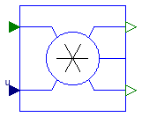

Package with models for radiosity transfer
This package provides component models for the infrared radiative heat exchange of window assemblies. The models are according to TARCOG 2006, except for the outdoor radiosity, which is computed by Buildings.HeatTransfer.Radiosity.OutdoorRadiosity. The outdoor radiosity is different from the TARCOG implementation so that the same equations are used for windows as are used for opaque walls in the room heat transfer model of the package Buildings.Rooms.
By definition, incoming and outcoming radiosity are both positive. This is required to connect incoming and outcoming radiosity connectors.
TARCOG 2006: Carli, Inc., TARCOG: Mathematical models for calculation of thermal performance of glazing systems with our without shading devices, Technical Report, Oct. 17, 2006.
Extends from Modelica.Icons.VariantsPackage (Icon for package containing variants).
| Name | Description |
|---|---|
| Constant | Generate constant radiosity signal |
| IndoorRadiosity | Model for indoor radiosity |
| OpaqueSurface | Model for an opaque surface |
| Model for the outdoor radiosity that strikes the window | |
| Splits the incoming radiosity into two flows based on an input signal | |
| Collection of models that illustrate model use and test models | |
| Package with base classes for Buildings.HeatTransfer.Radiosity |
 Buildings.HeatTransfer.Radiosity.Constant
Buildings.HeatTransfer.Radiosity.Constant
Generate constant radiosity signal
Constant radiosity source. This model requires k ≥ 0.
This model is used in Buildings.HeatTransfer.BaseClasses.DummyConstructionExterior.
Extends from Modelica.Blocks.Icons.Block (Basic graphical layout of input/output block).
| Type | Name | Default | Description |
|---|---|---|---|
| Real | k | Radiosity that leaves this component (k ≥ 0) |
| Type | Name | Description |
|---|---|---|
| output RadiosityOutflow | JOut | [W] |
 Buildings.HeatTransfer.Radiosity.IndoorRadiosity
Buildings.HeatTransfer.Radiosity.IndoorRadiosity
Model for indoor radiosity

Model for the indoor emissive power that hits a window. The computation is according to TARCOG 2006.
TARCOG 2006: Carli, Inc., TARCOG: Mathematical models for calculation of thermal performance of glazing systems with our without shading devices, Technical Report, Oct. 17, 2006.
Extends from Buildings.HeatTransfer.Radiosity.BaseClasses.RadiosityOneSurface (Model for the radiosity balance of a device with one surface), Buildings.HeatTransfer.Radiosity.BaseClasses.ParametersOneSurface (Parameters that are used to model one surface).
| Type | Name | Default | Description |
|---|---|---|---|
| Area | A | Surface area [m2] | |
| Emissivity | absIR | 1 | Infrared absorptivity [1] |
| ReflectionCoefficient | rhoIR | 0 | Infrared reflectivity [1] |
| TransmissionCoefficient | tauIR | 0 | Infrared transmissivity [1] |
| Boolean | linearize | false | Set to true to linearize emissive power |
| Temperature | T0 | 293.15 | Temperature used to linearize radiative heat transfer [K] |
| Type | Name | Description |
|---|---|---|
| input RadiosityInflow | JIn | Incoming radiosity [W] |
| output RadiosityOutflow | JOut | Outgoing radiosity [W] |
| HeatPort_a | heatPort | Heat port of the surface |
 Buildings.HeatTransfer.Radiosity.OpaqueSurface
Buildings.HeatTransfer.Radiosity.OpaqueSurface
Model for an opaque surface
Extends from Buildings.HeatTransfer.Radiosity.BaseClasses.RadiosityOneSurface (Model for the radiosity balance of a device with one surface), Buildings.HeatTransfer.Radiosity.BaseClasses.ParametersOneSurface (Parameters that are used to model one surface).
| Type | Name | Default | Description |
|---|---|---|---|
| Area | A | Surface area [m2] | |
| Emissivity | absIR | Infrared absorptivity [1] | |
| ReflectionCoefficient | rhoIR | 1 - absIR | Infrared reflectivity [1] |
| TransmissionCoefficient | tauIR | 1 - rhoIR - absIR | Infrared transmissivity [1] |
| Boolean | linearize | false | Set to true to linearize emissive power |
| Temperature | T0 | 293.15 | Temperature used to linearize radiative heat transfer [K] |
| Type | Name | Description |
|---|---|---|
| input RadiosityInflow | JIn | Incoming radiosity [W] |
| output RadiosityOutflow | JOut | Outgoing radiosity [W] |
| HeatPort_a | heatPort | Heat port of this surface |
 Buildings.HeatTransfer.Radiosity.OutdoorRadiosity
Buildings.HeatTransfer.Radiosity.OutdoorRadiosity
Model for the outdoor radiosity that strikes the window

Model for the infrared radiosity balance of the outdoor environment.
| Type | Name | Default | Description |
|---|---|---|---|
| Area | A | Area of receiving surface [m2] | |
| Real | vieFacSky | View factor from receiving surface to sky (=1 for roofs) | |
| Boolean | linearize | false | Set to true to linearize emissive power |
| Temperature | T0 | 293.15 | Temperature used to linearize radiative heat transfer [K] |
| Type | Name | Description |
|---|---|---|
| input RealInput | TOut | Outside temperature [K] |
| input RealInput | TBlaSky | Black body sky temperature [K] |
| output RadiosityOutflow | JOut | Radiosity that flows out of component [W] |
Splits the incoming radiosity into two flows based on an input signal

This blocks splits the incoming radiosity into two fluxes according to
JOut,1 = u JIn,
JOut,2 = (1-u) JIn.
This block may be used to split the radiosity flux into a fraction that strikes the shaded part of a window, and a fraction that strikes the non-shaded part.
Extends from Modelica.Blocks.Icons.Block (Basic graphical layout of input/output block).
| Type | Name | Description |
|---|---|---|
| input RadiosityInflow | JIn | Inflowing radiosity [W] |
| input RealInput | u | u times incoming radiosity |
| output RadiosityOutflow | JOut_1 | u times incoming radiosity [W] |
| output RadiosityOutflow | JOut_2 | (1-u) times incoming radiosity [W] |